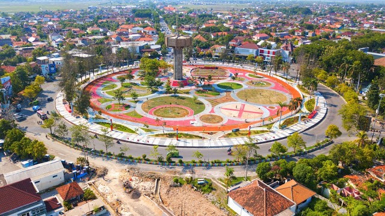

asal mula kota purwodadi Kabupaten grobogan yang ibu kotanya di purwodadi, menurut perda kab. Grobogan no 11 tahun 1991 tentang penetapan hari jadi kabupaten grobogan hari jadinya senin kliwon, 21 jumadilakir 1650 saka atau 4 maret1726 Menurut sumber lainnya : Grobogan Hari jadi : 4 maret 1726 Tgl.qomaria : 1 rajab 1138 h Hari : senin 4 Pasaran : pahing 9 Umur pada tgl 08 november 2001 : 275 tahun, 8 bulan, 5 hari Bintang : pisces Wuku : wukir Shio : kuda Elemen : api (+) Chandra sengkala hari jadi grobogan adalah “kombuling cipto hangroso jati”. Surya sangkala hari jadi grobogan adalah “kridhaning hangga hambangun praja” Ceritanya pada saat itu susuhunan amangkurat iv mengangkat seorang abdi yang telah berjasa kepada sunan, Bernama NG. Wongsodipo menjadi bupati monconagari (taklukan raja) grobogan dengan nama rt martopuro pada 21 jumadilakir 1650 saka atau 4 maret1726. Dalam pengangkatan ini ditetapkan pula wilayah yang menjadi kekuasaannya yaitu : . Sela, teras karas, wirosari, santenan, grobogan, dan beberapa daerah di sukowati bagian utara bengawan sala (serat babad kartasura / babad pacina : 172 – 174).

Oleh karena kota kartasura pada waktu itu sedang dalam keadaan kacau, maka rt martopuro masih tetap di kartasura. Sedang pengawasan terhadap daerah grobogan diserahkan kepada kemenakan sekaligus menantunya bernama rt suryonagoro (suwandi). Tugasnya menciptakan struktur pemerintahan kabupaten pangreh praja. Seperti adanya bupati patih, kaliwon, pamewu, mantri, dan seterusnya sampai jabatan bekel di desa – desa Dengan ibu kotanya di grobogan.tetapi pada tahun 1864 ibukota kabupaten grobogan pindah ke purwodadi Dipimpin oleh rt. Adipati martonagoro 1864 – 1875 dan sampai sekarang ibu kota kabupaten grobogan masih di kota purwodadi. Asal Nama Purwodadi – Grobogan Asal mula daerah (Purwodadi) itu disebut grobogan menurut cerita tutur yang beredar di daerah grobogan suatu ketika, pasukan demak di bawah pimpinan sunan ngundung & sunan kudus menyerbu ke pusat kerajaan mojopahit. Dalam pertempuran tersebut pasukan demak memperoleh kemenangan gemilang. Runtuhlah kerajaan mojopahit. Ketika sunan ngundung memasuki istana, dia menemukan banyak pusaka mojopahit yang ditinggalkan. Benda – benda itu dikumpulkan dan dimasukkan ke dalam sebuah grobog, kemudian dibawa sebagai barang boyongan ke demak. Di dalam perjalanan kembali ke demak grobog tersebut tertinggal di suatu tempat karena sesuatu sebab.
Tempat itu kemudian disebut grobogan. Dengan demikian menurut cerita di atas ” grobog” berarti tempat menyimpan senjata/ barang pusaka Peristiwa tersebut sangat mengesankan hati sunan ngundung. Sebagai kenangan, maka tempat tersebut di beri nama grobogan, yaitu tempat grobog.